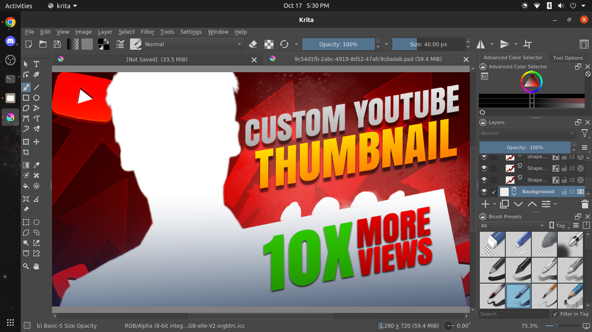

Make every detail yours.
Paint, compose, and refine with a complete creative toolkit. Layers, groups, masks, filters, and transform tools give your ideas room to grow.
A professional image editing studio with the freedom to make it yours. Built on Krita. Tuned for everyday hardware. Ready when inspiration is.

From the first brush stroke to the final export, keep your creative tools close and your workflow moving.
Paint, compose, and refine with a complete creative toolkit. Layers, groups, masks, filters, and transform tools give your ideas room to grow.
Open and export PSD files, choose the included Photoshop-compatible shortcut profile, and settle into a familiar studio layout.
Low-memory defaults and a two-thread profile help you create on modest hardware. A portable Linux AppImage keeps setup simple.
A dark studio workspace with your canvas at the center. Explore genuine captures from the project.
Choose a Windows installer, a portable Windows archive, or the self-contained Linux AppImage. Once launched, Creative Pic works offline.
Read the quick startDownload the v0.2 release for Linux x86_64 or Windows x64.
Open a file or a fresh canvas in the dark studio workspace.
Paint, edit, animate, and export with the full Krita toolkit.
Get Creative Pic v0.2 and make something worth sharing.
Self-contained AppImage. No root required.
Download for Linux Ubuntu 20.04 LTS and compatible newer distributions.Install your studio, or take the portable version.
Download for Windows Unsigned installer; Windows may show SmartScreen.Yes. Creative Pic is a rebranded, tuned distribution of Krita 5.2.16, licensed under GNU GPL v3 or later. The project provides build scripts and corresponding source information in its repository.
Creative Pic retains Krita’s PSD import and export support. The repository includes a real layered Photoshop template opened on user hardware. Compatibility can vary by document and Photoshop-specific features; check your file before relying on a production round-trip.
The Linux build targets x86_64 systems compatible with Ubuntu 20.04 LTS and glibc 2.30 or newer. Its low-spec defaults target 4 GB RAM and two-core CPUs. The Windows downloads target x64. See the compatibility report for build details.
The GitHub repository contains build scripts, license and source information, performance reports, recorded test evidence, and known limitations. Creative Pic was previously named Creative Studio Ultimate (Full).